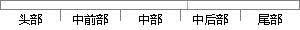

峰值处所对应的时差为τ=d?
片段位置图

相似结果|
相似片段 1：—22)通过MUSIC算法估计信号功率谱，功率谱峰值处所对应的频率就是信号频率。通过这种方法比较两信号功率谱的峰值频率值，就可以得到两路信号间的频差。4．3基于改进MUSIC算法的频差估计算法由时差
相似片段 2：特征分解，找到频率 fi处所对应的信号子空间 Us(fi)和噪声子空间 Un(fi)，根据二者的正交性构建 MUSIC 空间谱函数 PMUSIC(θ,fi)，对 PMUSIC(θ,fi)进行峰值搜索
相似片段 3：波时差对比结果。从图3．7中知道，地震曲线的峰值与分形曲线的峰值一一对应。从分形曲线结果看到，地震记录的多方向组合分维曲线具有较好的视分辨率。经过分析和经过岩性录井资料标定知道，该地区的砂岩对应于声波
相似片段 4：的研究成果，提出泥页岩在正常的压实情况下声波时差的对数与埋深存在线性关系。沉积地层中的不整合在声波时差测井上具有响应异常”，此处所i兑的不整合是指岩石地层在沉积上缺少连续性的特征，不整合面对应于层序地层中
相似片段 5：实验与改进 设计“冲击音”提取算法，从实测柯氏音信号中提取了 398组“冲击音”信号的频谱样本ks 1 398{ , , }f fS s s? ? ，以及样本对应的“冲击音”与脉搏波峰值点的时差ks
相似片段 6：况下声波时差的对数与埋深存在线性关系。沉积地层中的不整合在声波时差测井上具有响应异常∞]。此处所说的不整合是指岩石地层在沉积上缺少连续性的特征，不整合面对应于层序地层中的层序界面。不整合的形成将导致
相似片段 7：)、y(珂)还是采用延时差分信号dx(n)、ay(，z)，主峰值位置对应时间差均在59．72s附近，即定位在末站。然而实际泄漏位置为第二峰值所对应的21s附近，因此极易造成误报现象。理黎髅．1——L?一
相似片段 8：线性关系。沉积地层中的不整合在声波时差测井上具有响应异常”，此处所i兑的不整合是指岩石地层在沉积上缺少连续性的特征，不整合面对应于层序地层中的层序界面。不整合的形成将导致某些因素出现异常．从而使沉积
|
※ 片段修改建议 ※
近似词参考：- 处所：地方
系统自动生成语句：峰值地方对应的时差为τ=d?
注：本片段修改建议为系统自动生成，仅供参考。